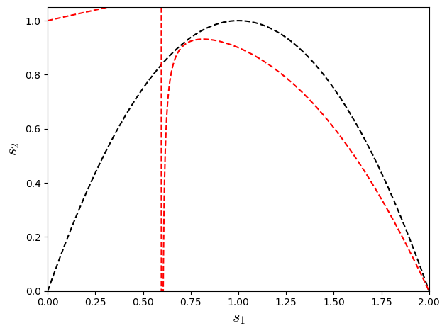

Show code cell source
import warnings
warnings.filterwarnings("ignore")
import numpy as np
import matplotlib.pyplot as plt
import matplotlib
matplotlib.rcParams['mathtext.fontset'] = 'cm'
matplotlib.rcParams['mathtext.fontset'] = 'cm'
#--------------------------------------- Parameters (physical units) ------------------------------------------
A = 1.0 # Amplitude
phi = 0.0 # Wave initial shift
k_w = 1.0 # Wave number
c = 0.0 # wave speed
nu = 0.066666666666666666*np.pi # Diffusive coefficient
m_waves = 1 # Wave Period
L = m_waves * (2.0*np.pi / k_w) # Domain Lentgh
t_end = 12.0 # Final time
#--------------------------------------- Lattice-Properties-D1Q3 ----------------------------------------------
w = np.array([4.0/6.0, 1.0/6.0, 1.0/6.0],dtype="float64")
cx = np.array([0, 1, -1],dtype="int16")
cs=1.0/np.sqrt(3.0);
#--------------------------------- Initialization - Save Data Arrays -----------------------------------------------
cases=4
Nx0 = np.array([10, 20, 40, 80],dtype="int64")
r0 = 2**(0)*np.array([2.0**(1), 2.0**(2), 2.0**(3), 2.0**(4)],dtype="float64")
u_cases = np.empty(cases, dtype=object) # array field used to same data over time
for i in range(cases):
u_cases[i] = np.zeros((Nx0[i]), dtype="float64")
for case in range(0,cases):
#------------------------------------- Parameters (numerical units) -------------------------------------------
Nx=Nx0[case] # Numerical Length
x = np.linspace(0.0, L, Nx, endpoint=False,dtype="float64") # Numerical Domain
dx = L / Nx # Grid size
r = 1*r0[case] # dx/dt relation
dt = dx/r
ce = c/r
nue = nu * dt / (dx*dx)
tau1 = 0.5 + nue / cs**2
tau2=1.0/((1.0/tau1)*(2.0-(1.0/tau1)))
nt = int(np.ceil(t_end / dt))
print(f"dx={dx:.4e},\t dt={dt:.4e}\t nt={nt:d},\t tn={nt*dt:.2f}") # Print values for check
print(f"c_lbm={ce:.3f},\t tau1={tau1:.4f},\t tau2={tau2:.4f}")
print(f"s1={1.0/tau1:.4f},\t s2={1.0/tau2:.4f}")
print(f"nt={nt:.3f}\t, nue={nue:.4f}")
#--------------------------------- Initialization - LBM - Numerical Arrays -----------------------------------------
u=np.zeros((Nx),dtype="float64")
u = A * np.sin(k_w*(x+dx/2) + phi)
mx=np.zeros((Nx),dtype="float64")
mxx=np.zeros((Nx),dtype="float64")
mxxx=np.zeros((Nx),dtype="float64")
mx2=np.zeros((Nx),dtype="float64")
mxx2=np.zeros((Nx),dtype="float64")
mxxx2=np.zeros((Nx),dtype="float64")
f=np.zeros((3,Nx),dtype="float64")
feq=np.zeros((3,Nx),dtype="float64")
fneq1=np.zeros((3,Nx),dtype="float64")
fneq2=np.zeros((3,Nx),dtype="float64")
fp=np.zeros((3,Nx),dtype="float64")
for k in range(0,3):
f[k,:]=w[k]*(u[:]+cx[k]*ce*u[:]/cs**2)
fp[k,:]=w[k]*(u[:]+cx[k]*ce*u[:]/cs**2)
#----------------------------------------- Init Loop --------------------------------------------------------
for t in range(nt*10):
#========================================= LBM - Solution =============================================
#--------------------Collision----------------
for k in range(0,3):
feq[k,:]= w[k]*(u[:]+cx[k]*(ce*u[:])/cs**2)
mx = np.einsum('i,ix->x', cx, f-feq)
mxx = np.einsum('i,ix->x', 3.0*cx*cx-2.0, f-feq)
mxxx = np.einsum('i,ix->x', cx*(3.0*cx*cx-2.0), f-feq)
for k in range(0,3):
fneq1[k,:]= w[k]*(cx[k]*mx[:]/cs**2 + (cx[k]**2-cs**2)*mxx[:]/(2.0*cs**2))
for k in range(0,3):
fneq2[k,:]= f[k,:] - feq[k,:] - fneq1[k,:]
mx2 = np.einsum('i,ix->x', cx, fneq2)
mxx2 = np.einsum('i,ix->x', 3.0*cx*cx-2.0, fneq2)
mxxx2 = np.einsum('i,ix->x', cx*(3.0*cx*cx-2.0), fneq2)
for k in range(0,3):
# fp[k,:]= f[k,:] - w[k]*( cx[k]*mx[:]/(tau1*cs**2) + (cx[k]**2-cs**2)*mxx[:]/(2.0*cs**2*tau2) )
fp[k,:]= feq[k,:] + w[k]*( (1.0-1.0/tau1)*cx[k]*mx[:]/cs**2 + (1.0-1.0/tau2)*(cx[k]**2-cs**2)*mxx[:]/(2.0*cs**2) )
#-----------------streaming-------------------
for k in range(0,3):
f[k,:]=np.roll(fp[k,:], cx[k], axis=0)
#----------------------------------------- Maind Loop --------------------------------------------------------
for t in range(nt):
#========================================= LBM - Solution =============================================
#--------------------Collision----------------
for k in range(0,3):
feq[k,:]= w[k]*(u[:]+cx[k]*(ce*u[:])/cs**2)
mx = np.einsum('i,ix->x', cx, f-feq)
mxx = np.einsum('i,ix->x', 3.0*cx*cx-2.0, f-feq)
for k in range(0,3):
# fp[k,:]= f[k,:] - w[k]*( cx[k]*mx[:]/(tau1*cs**2) + (cx[k]**2-cs**2)*mxx[:]/(2.0*cs**2*tau2) )
fp[k,:]= feq[k,:] + w[k]*( (1.0-1.0/tau1)*cx[k]*mx[:]/cs**2 + (1.0-1.0/tau2)*(cx[k]**2-cs**2)*mxx[:]/(2.0*cs**2) )
#-----------------streaming-------------------
for k in range(0,3):
f[k,:]=np.roll(fp[k,:], cx[k], axis=0)
#----------------------Macro------------------
# u[:]=f[0,:]+f[1,:]+f[2,:]
u=np.einsum('ix->x', f)
#---------------------save-field-cases--------------
u_cases[case][:]=u[:]
Show code cell output
dx=6.2832e-01, dt=3.1416e-01 nt=39, tn=12.25
c_lbm=0.000, tau1=1.0000, tau2=1.0000
s1=1.0000, s2=1.0000
nt=39.000 , nue=0.1667
dx=3.1416e-01, dt=7.8540e-02 nt=153, tn=12.02
c_lbm=0.000, tau1=1.0000, tau2=1.0000
s1=1.0000, s2=1.0000
nt=153.000 , nue=0.1667
dx=1.5708e-01, dt=1.9635e-02 nt=612, tn=12.02
c_lbm=0.000, tau1=1.0000, tau2=1.0000
s1=1.0000, s2=1.0000
nt=612.000 , nue=0.1667
dx=7.8540e-02, dt=4.9087e-03 nt=2445, tn=12.00
c_lbm=0.000, tau1=1.0000, tau2=1.0000
s1=1.0000, s2=1.0000
nt=2445.000 , nue=0.1667
Show code cell source
#****************************************Data-Analysis*********************************************
# ---------------- exact solution ----------------
def u_exact(x, t, A, k_w, phi, c, nu):
return A * np.exp(-nu * k_w**2 * t) * np.sin(k_w * ((x+dx/2) - c*t) + phi)
u_ana = np.empty(cases, dtype=object) # array field used to same data over time
xl = np.empty(cases, dtype=object) # array field used to same data over time
for i in range(cases):
Nx=Nx0[i] # Numerical Length
x = np.linspace(0.0, L, Nx, endpoint=False,dtype="float64") # Numerical Domain
dx = L / Nx # Grid size
r = r0[i] # dx/dt relation
dt = dx/r
nt = int(np.ceil(t_end / dt))
xl[i] = np.linspace(0.0, L, Nx0[i], endpoint=False,dtype="float64")
u_ana[i] = np.zeros((Nx0[i]), dtype="float64")
u_ana[i] = u_exact(xl[i], nt*dt , A, k_w, phi, c, nu)
# -----------------Plot Results --------------------
plt.figure(figsize=(10,5))
colors = plt.cm.viridis(np.linspace(0, 1, cases))
for i in range(cases):
plt.plot(xl[i], u_cases[i], "s", color=colors[i], lw=1, label=f"LBM $Nx={Nx0[i]:.0f}$",fillstyle='none')
plt.plot(xl[i], u_ana[i], color=colors[i], lw=1, label=f"Exact $t={t_end:.2f}$")
plt.xlabel("$x$",fontsize=16)
plt.ylabel("$u(x,t)$",fontsize=16)
plt.title("1D Convection-Diffusion: LBM vs Analytical Solution")
plt.grid(True, alpha=0.3)
plt.legend(ncol=5,fontsize=9,loc="center left",bbox_to_anchor=(0.0, 1.2))
plt.tight_layout()
plt.show()

plt.plot(mx,'k--')
plt.plot(mx2,'r--')
plt.plot(mxx,'k:')
plt.plot(mxx2,'r:')
[<matplotlib.lines.Line2D at 0x7d8de8cc3130>]

plt.plot(mxxx,'k:')
plt.plot(mxxx2,'r:')
[<matplotlib.lines.Line2D at 0x7d8de90e80d0>]
plt.plot(f[0,:]-feq[0,:],'k--')
# plt.plot(feq[0,:])
plt.plot(fneq1[0,:],'r--')
plt.plot(fneq2[0,:],'b--')
[<matplotlib.lines.Line2D at 0x7d8de9264460>]

plt.plot(f[1,:]-feq[1,:],'k--')
# plt.plot(feq[0,:])
plt.plot(fneq1[1,:],'r--')
plt.plot(fneq2[1,:],'b--')
[<matplotlib.lines.Line2D at 0x7d8de934f8b0>]
plt.plot(f[2,:]-feq[2,:],'k--')
# plt.plot(feq[0,:])
plt.plot(fneq1[2,:],'r--')
plt.plot(fneq2[2,:],'b--')
[<matplotlib.lines.Line2D at 0x7d8de91e9090>]

Show code cell source
Erro= np.zeros((cases), dtype="float64")
for i in range(cases):
Erro[i]=np.sqrt(np.sum((u_cases[i]-u_ana[i])**2))/np.sqrt(np.sum((u_ana[i])**2))
print(f'Erro{i}=',Erro[i])
TEp=np.polyfit(np.log(Nx0), np.log(Erro), 1)
print(TEp)
print(f'ltests[i] = np.array([{1/tau1:.2f},{cs**2:.2f},{-TEp[0]:.2f},{Erro[0]},{Erro[1]},{Erro[2]},{Erro[3]}],dtype="float64")')
Show code cell output
Erro0= 0.0007675056151644276
Erro1= 4.580188660075553e-05
Erro2= 2.84369556091393e-06
Erro3= 1.7721972578567817e-07
[-4.02508353 2.08310237]
ltests[i] = np.array([1.00,0.33,4.03,0.0007675056151644276,4.580188660075553e-05,2.84369556091393e-06,1.7721972578567817e-07],dtype="float64")
Show code cell source
#------------------ List of teste cases ---------------------------
ntests=7
ltests = np.empty(ntests, dtype=object) # list [omega, cs**2, a, erro1, erro2, erro3]
ltests[0] = np.array([1.00,0.33,4.03,0.0007675056151646606,4.5801886601000255e-05,2.843695561303167e-06,1.772197264107726e-07],dtype="float64")
ltests[1] = np.array([1.33,0.33,4.00,0.0005319361354470807,3.3129765953764316e-05,2.0679546121974942e-06,1.2921092318928152e-07],dtype="float64")
ltests[2] = np.array([1.60,0.33,4.08,5.860129798788711e-05,3.189703761917948e-06,1.931515584995748e-07,1.196493783881998e-08],dtype="float64")
ltests[3] = np.array([1.78,0.33,3.99,0.0002483413735518823,1.579458417941352e-05,9.910176963429327e-07,6.199383613392777e-08],dtype="float64")
ltests[4] = np.array([0.67,0.33,4.02,0.03555687087757651,0.002131864590352776,0.00013235766481817078,8.263390671807474e-06],dtype="float64")
ltests[5] = np.array([0.40,0.33,4.05,0.5815809299211789,0.03474238662797822,0.0020727393050372516,0.00012853963043932504],dtype="float64")
ltests[6] = np.array([0.22,0.33,3.64,3.3399608313842446,0.5520470158617199,0.031960605145718385,0.0019041931043053725],dtype="float64")
Show code cell source
matplotlib.rcParams['mathtext.fontset'] = 'cm'
plt.figure(figsize=(7,4))
plt.title("$Grid$ $Convergence$ $Test$",fontsize=14)
colors = plt.cm.viridis(np.linspace(0, 1, ntests))
# plt.loglog(1/Nx0,ltests[0][3:],'r--',fillstyle='none', label=f'$\\omega={ltests[0][0]}$ - $Slope={ltests[0][2]}$')
for i in range(7):
plt.loglog(1/Nx0,ltests[i][3:],'--',color=colors[i],fillstyle='none', label=f'$\\omega_{1}={ltests[i][0]}$ - $Slope={ltests[i][2]}$')
plt.loglog(1/Nx0,1.*200000.0/(Nx0**4),'k-',fillstyle='none')
plt.text(0.02, 0.05, "$4th-order$ $Slope$", rotation=15,fontsize=12)
# plt.ylim(0,0.01)
plt.grid(True, alpha=0.3)
# plt.legend(loc=2,ncol=3,fontsize=8.5)
plt.legend(ncol=3,fontsize=9,loc="center left",bbox_to_anchor=(0.0, 1.2))
plt.ylabel('$E_{T}$',fontsize=16,rotation=0,horizontalalignment='right')
plt.xlabel('$\Delta x$',fontsize=16)
plt.show()

Sixth-order MRT Diffusive Equation
Extending up to Sixth-order of convergence error (this link provide a sympy code that reach the above equation Sympy code for FDM expansion of LBM diffusive equation up to Sixth-order):
\[
\frac{\partial \phi}{\partial t} = \nu \frac{\partial^{2}\phi}{\partial x^{2}} + \frac{\Delta_{x}^{2} \nu R^{4th}}{12 s_{1}^{2} s_{2}} \frac{\partial^{4}\phi}{\partial x^{4}} - \frac{\Delta_{x}^{4} \nu R^{6th} }{24 s_{1}^{3} s_{2}} \frac{\partial^{6}\phi}{\partial x^{6}},
\]
where \(R^{4th}\) and \(R^{6th}\) are the terms in fouth and sixth-order error, respectively, given by:
\[
R^{4th}=\left(3 s_{1}^{2} s_{2} w_{0} - 2 s_{1}^{2} s_{2} - 6 s_{1}^{2} w_{0} - 18 s_{1} s_{2} w_{0} + 12 s_{1} s_{2} + 12 s_{1} w_{0} + 12 s_{2} w_{0} - 12 s_{2}\right)
\]
\[
R^{6th}=\left(7 s_{1}^{3} s_{2} w_{0}^{2} - 13 s_{1}^{3} s_{2} w_{0} + 6 s_{1}^{3} s_{2} - 6 s_{1}^{3} w_{0}^{2} + 12 s_{1}^{3} w_{0} - 5 s_{1}^{3} - 34 s_{1}^{2} s_{2} w_{0}^{2} + 67 s_{1}^{2} s_{2} w_{0} - 32 s_{1}^{2} s_{2} + 30 s_{1}^{2} w_{0}^{2} - 60 s_{1}^{2} w_{0} + 28 s_{1}^{2} + 52 s_{1} s_{2} w_{0}^{2} - 104 s_{1} s_{2} w_{0} + 52 s_{1} s_{2} - 48 s_{1} w_{0}^{2} + 96 s_{1} w_{0} - 48 s_{1} - 24 s_{2} w_{0}^{2} + 48 s_{2} w_{0} - 24 s_{2} + 24 w_{0}^{2} - 48 w_{0} + 24\right)
\]
Making the term \(\left(3 s_{1}^{2} s_{2} w_{0} - 2 s_{1}^{2} s_{2} - 6 s_{1}^{2} w_{0} - 18 s_{1} s_{2} w_{0} + 12 s_{1} s_{2} + 12 s_{1} w_{0} + 12 s_{2} w_{0} - 12 s_{2}\right)\) equal to zero e can reach fourth order approximation. For \(w_{0}=2/3\) (weight specific from the lattice D1Q3) the relation reduce to \(4s_{1}^{2} -8s_{1}+4s_{2}\):
Trying to make both \(R^{4th}\) and \(R^{6th}\) null for lattice D1Q3 (\(w_{0}=2/3\)), we have the relation:
\[
R^{4th}=4s_{1}^{2} -8s_{1}+4s_{2}=0 \qquad \rightarrow \qquad s_{2}=s_{1}(2-s_{1})
\]
\[
R^{6th} = \frac{s_{1}^{3}}{3} + \frac{4 s_{1}^{2}}{3} - \frac{16 s_{1}}{3} + s_{2} \left(\frac{4 s_{1}^{3}}{9} - \frac{22 s_{1}^{2}}{9} + \frac{52 s_{1}}{9} - \frac{8}{3}\right) + \frac{8}{3}=0 \qquad \rightarrow \qquad s_{2} = \displaystyle\frac{-\left( \frac{s_{1}^{3}}{3} + \frac{4 s_{1}^{2}}{3} - \frac{16 s_{1}}{3} + \frac{8}{3}\right) }{\left(\frac{4 s_{1}^{3}}{9} - \frac{22 s_{1}^{2}}{9} + \frac{52 s_{1}}{9} - \frac{8}{3}\right)} = \frac{3(2-s_{1})(s_{1}^{2} +6s_{1} -4)}{2(2s_{1}^{3} - 11s_{1}^{2} + 26s_{1} - 12)}
\]
Show code cell source
import warnings
warnings.filterwarnings("ignore")
import numpy as np
import matplotlib.pyplot as plt
import matplotlib
matplotlib.rcParams['mathtext.fontset'] = 'cm'
# ---- data ----
s1r = np.linspace(0, 2.0, 1000)
s2r4 = s1r*(2.0-s1r)
s2r6 = (3.0*(2.0-s1r)*(s1r**2.0 + 6.0*s1r - 4.0))/(2.0*(2.0*s1r**3 - 11.0*s1r**2 + 26.0*s1r - 12.0))
plt.plot(s1r,s2r4,'k--')
plt.plot(s1r,s2r6,'r--')
plt.xlabel(r'$s_{1}$',fontsize=16)
plt.ylabel(r'$s_{2}$',fontsize=16)
plt.xlim(0,2)
plt.ylim(0,1.05)
plt.tight_layout()
plt.show()
